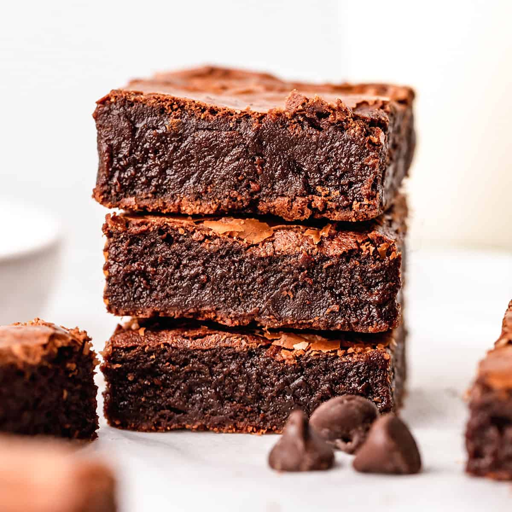

Best Brownies Recipe

This is the best brownie recipe ever! These fudgy brownies are homemade from scratch and have a gorgeous crinkly top with a fugdy center. They’re easy to make with only 7 ingredients! Ditch the box and make these homemade brownies today.
Ingredients for the brownies
- Salted butter. Unsalted butter, coconut oil and gee all work well in this recipe.
- Chopped chocolate. If you want to make the best brownies, then you need to choose a high-quality chocolate. Since the chocolate is melted the “form” of chocolate doesn’t matter. Use chocolate chips, chopped bars, discs, etc. The quality and cocoa content of your chocolate will affect the final outcome. I typically use Ghirardelli 60% dark chocolate chips.
- Granulated sugar. Any granulated sugar works well in this brownie recipe. I use organic cane sugar.
- Cocoa powder. regular unsweetened cocoa powder is the best choice for these fudgy brownies. You can use extra dark cocoa powder for an even more intense chocolate flavor.
- All-purpose flour. For a gluten-free version, substitute a 1:1 gluten-free all purpose flour blend.
- Sea Salt. I recommend using pure fine sea salt in baking and cooking. If you use iodized table salt decrease the amount of salt by half.
- Eggs. I have not tried using egg substitute. If you do and it works well for you please let me know in the comments below.
Step-by-Step instructions on how to make crepes
The first step in making this brownie recipe is to melt the butter and chocolate together in one of two ways:
- In the microwave. warm butter & chocolate in the microwave for 60 seconds. Stir and warm in 30 second increments with stirring in between until the mixture is smooth and glossy.
- On the stovetop. Gently warm butter and chocolate on the stovetop over low heat, stirring constantly until the mixture is smooth and shiny.
Set the melted butter/chocolate mixture aside to cool slightly while you mix up the rest of the batter.
- Start beating the eggs alone for 60 seconds until they are pale yellow.
- Add the vanilla and melted butter/chocolate mixture and beat again. This time, beat on medium speed until the ingredients are combined and the batter is uniform throughout.
- Add the dry ingredients to the brownie batter. If your flour or cocoa powder are particularly clumpy, you may want to sift them before adding them to the brownie recipe.
- Fold in the chocolate chips by hand.
- Spread the brownie batter evenly in a pan and bake. Be sure to test them at the beginning of the recommended baking time, you do not want over-baked brownies.
Let your homemade brownies cool in the baking pan for at least 15 minutes before cutting. You can eat them warm or at room temperature. However just be aware that the warmer they are, the more they will fall apart when cut.